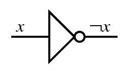

Software Engineering
Colegio Neuland
by Daniel Glinka
Wie rechnet ein Computer?
Er verknüpft Bitstrings miteinander. Dieses Vorgehen nennt man Boolsche Algebra.
Boolsche Algebra
In der Regel entspricht der Wert 0 False (Falsch) und 1 True (Wahr)
NOT Verknüpfung
Schreibweise: ¬x oder !x oder NOT x

| NOT | |
|---|---|
| 1 | 0 |
| 0 | 1 |
AND Verknüpfung
Schreibweise: x ∧ y oder x & y oder x AND y
| AND | 0 | 1 |
|---|---|---|
| 0 | 0 | 0 |
| 1 | 0 | 1 |
OR Verknüpfung
Schreibweise: x ∨ y oder x | y oder x OR y

| OR | 0 | 1 |
|---|---|---|
| 0 | 0 | 1 |
| 1 | 1 | 1 |
XOR Verknüpfung
Schreibweise: x ⊕ y
| XOR | 0 | 1 |
|---|---|---|
| 0 | 0 | 1 |
| 1 | 1 | 0 |
Verknüpfungen können beliebig miteinander kombiniert werden
(x ∨ y) ∧ ¬x
| x | y | x ∨ y | ¬x | (x ∨ y) ∧ ¬x |
|---|---|---|---|---|
| 0 | 0 | 0 | 1 | 1 |
| 1 | 0 | 1 | 0 | 1 |
| 0 | 1 | 1 | 1 | 1 |
| 1 | 1 | 0 | 0 | 0 |
Achtung Klammern: ¬(x ∧ y) != ¬x ∧ ¬y
¬(x ∧ y)
| x | y | x ∧ y | ¬(x ∧ y) |
|---|---|---|---|
| 0 | 0 | 0 | 1 |
| 1 | 0 | 0 | 1 |
| 0 | 1 | 0 | 1 |
| 1 | 1 | 1 | 0 |
¬x ∧ ¬y
| x | y | ¬x | ¬y | ¬x ∧ ¬y |
|---|---|---|---|---|
| 0 | 0 | 1 | 1 | 1 |
| 1 | 0 | 0 | 1 | 0 |
| 0 | 1 | 1 | 0 | 0 |
| 1 | 1 | 0 | 0 | 0 |
Tricks
Übungen
- (x ∨ ¬y) ∧ (¬x ∨ ¬y)
- (x ∨ y) ∨ ¬y
- ¬x ∧ (y ∨ x ∧ z)
Lösungen
- ¬y
- 1
- ¬x ∧ y
Bitweise Operatoren
NOT
Genutzt um eine Zahl zu inkrementieren, wenn man nur Bits bis zur nächsten 0 verknüpft
NOT 0111 (Dezimal 7) = 1000 (Dezimal 8) NOT 1011 (Dezimal 11) = 1100 (Dezimal 12) NOT 10101011 (Dezimal 171) = 01010100 (Dezimal 84)
AND
Genutzt um zu überprüfen, ob ein Bit gesetzt ist
0101
AND 0100
= 0100
0010
AND 0011
= 0010
OR
Genutzt um Bits zu setzen
0101 OR 0011 = 0111 0010 OR 1000 = 1010
XOR
Genutzt um Bits zu swappen (tauschen)
0101
XOR 0011
= 0110
0010
XOR 1010
= 1000
Bitshift Links <<
Genutzt um Zahlen mit 2 zu multiplizieren
0110 (Dezimal 6) LEFT-SHIFT +1 Bit = 1100 (Dezimal 12) 1001 (Dezimal 9) LEFT-SHIFT +2 Bits = 0010 0100 (Dezimal 36)
Bitshift Rechts >>
Genutzt um Zahlen durch 2 zu dividieren
0110 (Dezimal 6) RIGHT-SHIFT -1 Bit = 0011 (Dezimal 3) 1001 (Dezimal 9) LEFT-SHIFT +2 Bits = 0010 (Dezimal 2)
Addieren (OR mit Übertrag)
Wird eine 1 mit einer 1 verknüpft, haben wir einen Überlauf. Um diesen zu berücksichtigen schreiben wir 0 und merken uns 1. Diese 1 wird mit der nächsten Stelle verknüfpt.
0101 (Dezimal 5)
OR 0011 (Dezimal 3)
111 Übertrag
= 1000 (Dezimal 8)
0010 (Dezimal 2)
OR 1000 (Dezimal 8)
Übertrag
= 1010 (Dezimal 10)
Subtrahieren (OR mit Übertrag)
Wie addieren, jedoch wird die Zahl, die subtrahiert wird, zuvor einmal mit NOT verknüpft. Es muss von Anfang an eine 1 als Übertrag genutzt werden
0101 (Dezimal 5)
OR 1100 (Dezimal !3)
11 Übertrag
= 0010 (Dezimal 2)
1000 (Dezimal 8)
OR 1101 (Dezimal !2)
11 Übertrag
= 0110 (Dezimal 6)
Ausblick
- Komprimieren von Daten
- Encoding von Bildern